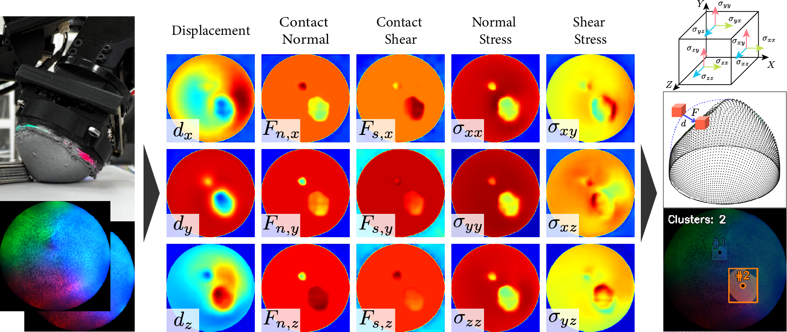

Won Kyung Do, Matthew Strong, Aiden Swann, Boshu Lei, Monroe Kennedy III
Stanford University, University of Pennsylvania

Abstract
Advanced dexterous manipulation involving multiple simultaneous contacts across different surfaces, like pinching coins from ground or manipulating intertwined objects, remains challenging for robotic systems. Such tasks exceed the capabilities of vision and proprioception alone, requiring high-resolution tactile sensing with calibrated physical metrics. Raw optical tactile sensor images, while information-rich, lack interpretability and cross-sensor transferability, limiting their real-world utility. TensorTouch addresses this challenge by integrating finite element analysis with deep learning to extract comprehensive contact information from optical tactile sensors, including stress tensors, deformation fields, and force distributions at pixel-level resolution. The TensorTouch framework achieves sub-millimeter position accuracy and precise force estimation while supporting large sensor deformations crucial for manipulating soft objects. Experimental validation demonstrates 90% success in selectively grasping one of two strings based on detected motion , enabling new contact-rich manipulation capabilities previously inaccessible to robotic systems.Real World Tactile Demos
Method at a Glance

Overview of the pipeline. We capture real-world pose, force of indenter and sensor images and simulate gel deformation and sensor motion with Finite Element analysis simulations.
Data Collection
Finite Element Simulation
From the collected dataset, the 6D poses are extracted as keypoints for FE simulation with the Yeoh hyperelastic model.
Construction of Deformation and Stress Tensor
.png)
Tactile Model
We showed that the Hiera with the Q-upsampling decoder outperforms other baselines. Hiera is a lightweight hierarchical vision transformer model that provides a hierarchical representation of the input tactile image, while outperforming state-of-the-art vision transformers. The specific design of the decoder and multi-scale feature fusion is critical for dense, multi-channel prediction tasks in the tactile domain. We find that our Hiera encoder and decoder architecture sets a new standard in tactile learning.

Results
From a single undeformed / deformed image of the sensor, TensorTouch estimates dense stress tensors, contact shear and normal force, and displacement distribution pixelwise.
Evaluation
To demonstrate the practical utility of TensorTouch's calibrated stress tensor estimation, we propose a task manipulates two deformable objects with tactile-sensor attached fingertips, detecting differential motion between the objects, and maintaining selective contact with only the moving object.
BibTeX (To be Updated)
@article{Do2025TensorTouch,
title = {TensorTouch: Calibration of Tactile Sensors for High Resolution Stress Tensor and Deformation for Dexterous Manipulation},
author = {Do, Won Kyung and Strong, Matthew and Swann, Aiden and Lei, Boshu and Kennedy, Monroe III},
year = {2025},
url = {https://arxiv.org/abs/2506.08291}
}